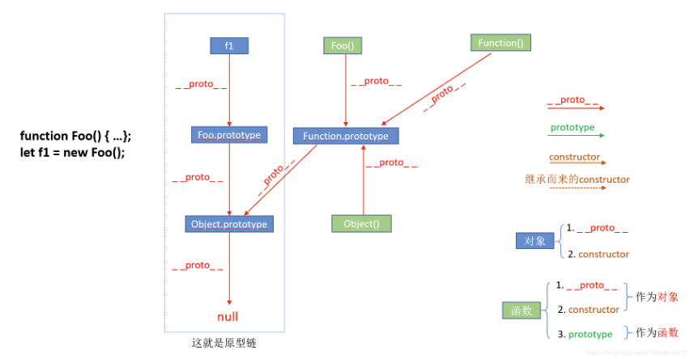

本文大部分内容转载自：https://blog.csdn.net/cc18868876837/article/details/81211729
前言
作为一名前端工程师，必须搞懂JS中的prototype、__proto__与constructor属性，相信很多初学者对这些属性存在许多困惑，容易把它们混淆，本文旨在帮助大家理清它们之间的关系并彻底搞懂它们。这里说明一点，__proto__属性的两边是各由两个下划线构成（这里为了方便大家看清，在两下划线之间加入了一个空格：_ _proto_ _，读作“dunder proto”，“double underscore proto”的缩写），实际上，该属性在ES标准定义中的名字应该是[[Prototype]]，具体实现是由浏览器代理自己实现，谷歌浏览器的实现就是将[[Prototype]]命名为__proto__，大家清楚这个标准定义与具体实现的区别即可（名字有所差异，功能是一样的），可以通过该方式检测引擎是否支持这个属性：Object.getPrototypeOf({__proto__: null}) === null。本文基于谷歌浏览器（版本 72.0.3626.121）的实验结果所得。
现在正式开始！ 让我们从如下一个简单的例子展开讨论，并配以相关的图帮助理解：
function Foo() {...};
let f1 = new Foo();
以上代码表示创建一个构造函数Foo()，并用new关键字实例化该构造函数得到一个实例化对象f1。这里稍微补充一下new操作符将函数作为构造器进行调用时的过程：函数被调用，然后新创建一个对象，并且成了函数的上下文（也就是此时函数内部的this是指向该新创建的对象，这意味着我们可以在构造器函数内部通过this参数初始化值），最后返回该新对象的引用，详细请看：详解JavaScript中的new操作符。虽然是简简单单的两行代码，然而它们背后的关系却是错综复杂的，如下图所示：

看到这图别怕，让我们一步步剖析，彻底搞懂它们！
图的说明：右下角为图例，红色箭头表示__proto__属性指向、绿色箭头表示prototype属性的指向、棕色实线箭头表示本身具有的constructor属性的指向，棕色虚线箭头表示继承而来的constructor属性的指向；蓝色方块表示对象，浅绿色方块表示函数（这里为了更好看清，Foo()仅代表是函数，并不是指执行函数Foo后得到的结果，图中的其他函数同理）。图的中间部分即为它们之间的联系，图的最左边即为例子代码。
proto 属性
首先，我们需要牢记两点：①__proto__和constructor属性是对象所独有的；② prototype属性是函数所独有的。但是由于JS中函数也是一种对象，所以函数也拥有__proto__和constructor属性，这点是致使我们产生困惑的很大原因之一。上图有点复杂，我们把它按照属性分别拆开，然后进行分析：

第一，这里我们仅留下 __proto__ 属性，它是对象所独有的，可以看到__proto__属性都是由一个对象指向一个对象，即指向它们的原型对象（也可以理解为父对象），那么这个属性的作用是什么呢？它的作用就是当访问一个对象的属性时，如果该对象内部不存在这个属性，那么就会去它的__proto__属性所指向的那个对象（可以理解为父对象）里找，如果父对象也不存在这个属性，则继续往父对象的__proto__属性所指向的那个对象（可以理解为爷爷对象）里找，如果还没找到，则继续往上找…直到原型链顶端null（可以理解为原始人。。。），再往上找就相当于在null上取值，会报错（可以理解为，再往上就已经不是“人”的范畴了，找不到了，到此结束，null为原型链的终点），由以上这种通过__proto__属性来连接对象直到null的一条链即为我们所谓的原型链。
其实我们平时调用的字符串方法、数组方法、对象方法、函数方法等都是靠__proto__继承而来的。
prototype属性
第二，接下来我们看 prototype 属性：

prototype属性，别忘了一点，就是我们前面提到要牢记的两点中的第二点，它是函数所独有的，它是从一个函数指向一个对象。它的含义是函数的原型对象，也就是这个函数（其实所有函数都可以作为构造函数）所创建的实例的原型对象，由此可知：f1.__proto__ === Foo.prototype，它们两个完全一样。那prototype属性的作用又是什么呢？它的作用就是包含可以由特定类型的所有实例共享的属性和方法，也就是让该函数所实例化的对象们都可以找到公用的属性和方法。任何函数在创建的时候，其实会默认同时创建该函数的prototype对象。
constructor属性
最后，我们来看一下 constructor 属性：

constructor属性也是对象才拥有的，它是从一个对象指向一个函数，含义就是指向该对象的构造函数，每个对象都有构造函数（本身拥有或继承而来，继承而来的要结合__proto__属性查看会更清楚点，如下图所示），从上图中可以看出Function这个对象比较特殊，它的构造函数就是它自己（因为Function可以看成是一个函数，也可以是一个对象），所有函数和对象最终都是由Function构造函数得来，所以constructor属性的终点就是Function这个函数。

感谢网友的指出，这里解释一下上段中“每个对象都有构造函数”这句话。这里的意思是每个对象都可以找到其对应的constructor，因为创建对象的前提是需要有constructor，而这个constructor可能是对象自己本身显式定义的或者通过__proto__在原型链中找到的。而单从constructor这个属性来讲，只有prototype对象才有。每个函数在创建的时候，JS会同时创建一个该函数对应的prototype对象，而函数创建的对象.__proto__ === 该函数.prototype，该函数.prototype.constructor===该函数本身，故通过函数创建的对象即使自己没有constructor属性，它也能通过__proto__找到对应的constructor，所以任何对象最终都可以找到其构造函数（null如果当成对象的话，将null除外）。如下：

模拟实现new关键字
这部分内容不是转载的哈，既然前面学习了prototype、__proto__与constructor的关系，其实我们也知道了new关键字的作用。那我们自己就可以来模拟实现一个new关键字，先来看看new到底干了什么：
1. new返回了一个对象f1
2. f1.__proto__指向了Foo.prototype
3. f1通过执行Foo的constructor，得到了constructor里面赋予的属性
来写代码：
function myNew(parent, ...args){
const obj = {}; // 初始化空对象
obj.__proto__ = parent.prototype; // 该对象的__proto__指向父级的prototype
parent.call(obj, ...args); // 将该对象作为this执行构造函数
return obj;
}
function parent(car){
this.car = car;
}
const me = myNew(parent, 'benz');
// 测试下
console.log(me.car); // 'benz'
总结
总结一下：
- 我们需要牢记两点：①
__proto__和constructor属性是对象所独有的；②prototype属性是函数所独有的，因为函数也是一种对象，所以函数也拥有__proto__和constructor属性。 __proto__属性的作用就是当访问一个对象的属性时，如果该对象内部不存在这个属性，那么就会去它的__proto__属性所指向的那个对象（父对象）里找，一直找，直到__proto__属性的终点null，再往上找就相当于在null上取值，会报错。通过__proto__属性将对象连接起来的这条链路即我们所谓的原型链。prototype属性的作用就是让该函数所实例化的对象们都可以找到公用的属性和方法，即f1.__proto__ === Foo.prototype。constructor属性的含义就是指向该对象的构造函数，所有函数（此时看成对象了）最终的构造函数都指向Function。 本文就此结束了，希望对那些对JS中的prototype、__proto__与constructor属性有困惑的同学有所帮助。
最后，感谢这两篇博文，本文中的部分内容参考自这两篇博文： https://www.cnblogs.com/xiaohuochai/p/5721552.html https://www.cnblogs.com/Narcotic/p/6899088.html